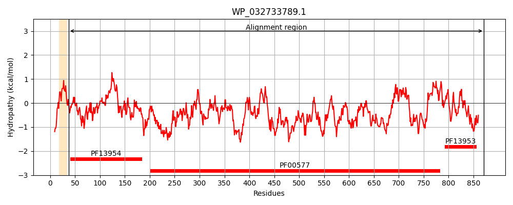
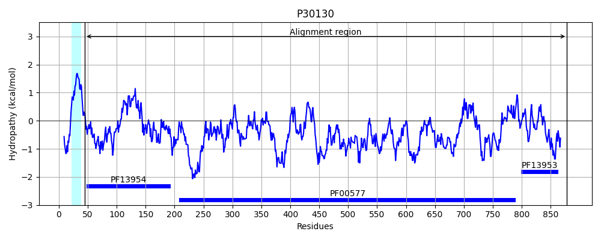
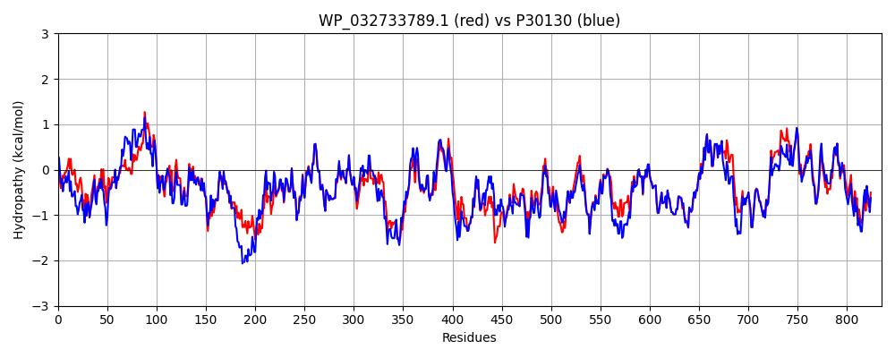

Hit Accession: P30130
Hit TCID: 1.B.11.3.9
Hit Description: gnl|BL_ORD_ID|9707 gnl|TC-DB|P30130|1.B.11.3.9 Outer membrane usher protein fimD OS=Escherichia coli (strain K12) GN=fimD PE=1 SV=2
Mach Len: 835
e:0.000000
Query TMS Count : 1
Hit TMS Count: 1
TMS-Overlap Score: 0.700000
Predicted Substrates:None
BLAST Alignment:
Score: 3638 , Bit scores: 1405 bits, E-value: 0.0e+00, Alignment length: 835, Percentage identity: 80
Query: 37 ADLYFNPRFLADDPAAVADLSGFEKGQEVPPGTYRVDIYLNNGFMTTRDVTFQADVQGHGLSPCLTRGQLASMGVDTGRVPGMATLDSAACVPLTTLISEATTRFDVGQQRLYLTVPQAFMGTRARGYIPPELWDNGITAGLINYNFTGNNVHNTTGGSSRYAYLNLQSGLNVGAWRLRDNSTWSYSSGSGSASSSENRWQHVNSWLERDITPLRSRLTLGDSYTNGDVFDGINFRGAQLASDDNMLPDSQKGFAPVIHGIARGTAQVSIKQNGYEIYQSTVPPGPFTIDDLYAAGNGGDLQVTIKEADGSRQVFSVPWSTVPVLQREGHTRFALTAGEYRSGNSQQETPDFFQSTAMHGLPAGWTLYGGTQLADRYRAFNLGVGKNMGYFGALSLDITQANATLADDSEHQGQSVRFLYNKSLDETGTNLQLVGYRYSTRGYYNFADTTYRRMSGYSVETQDGVIQVKPKFTDYYNLAYSKRGKVQLSVTQQLGRTATLYLSGSHQTYWGTDDADEQLQAGLNAAVDDINWSLSYSLTKNAWQQGRDQMLAVNVNIPFSHWLRSDSRSVWRHASASYSLSHDLNGRMTNLAGLYGTLLEDNNLSYSVQTGYAGGGNGDSGSTGYTALNYRGGYGNANVGYSRSDGFKQLYYGVSGGVLAHANGITLSQPLNDTVVLVKAPGAGGVKVENQTGVRTDWRGYAVLPYATEYRENRIALDTNTLADNVDLDDAVVSVVPTHGAIVRANFNAQVGMKILMTLTHRGKPVPFGALATGDSNQSGSIVADNGQVYLSGMPLAGKVRVKWGDGPDAQCVADYRLPPESQQQALSQLSAACR 871
ADLYFNPRFLADDP AVADLS FE GQE+PPGTYRVDIYLNNG+M TRDVTF G+ PCLTR QLASMG++T V GM L ACVPLTT++ +AT DVGQQRL LT+PQAFM RARGYIPPELWD GI AGL+NYNF+GN+V N GG+S YAYLNLQSGLN+GAWRLRDN+TWSY+S S +S S+N+WQH+N+WLERDI PLRSRLTLGD YT GD+FDGINFRGAQLASDDNMLPDSQ+GFAPVIHGIARGTAQV+IKQNGY+IY STVPPGPFTI+D+YAAGN GDLQVTIKEADGS Q+F+VP+S+VP+LQREGHTR+++TAGEYRSGN+QQE FFQST +HGLPAGWT+YGGTQLADRYRAFN G+GKNMG GALS+D+TQAN+TL DDS+H GQSVRFLYNKSL+E+GTN+QLVGYRYST GY+NFADTTY RM+GY++ETQDGVIQVKPKFTDYYNLAY+KRGK+QL+VTQQLGRT+TLYLSGSHQTYWGT + DEQ QAGLN A +DINW+LSYSLTKNAWQ+GRDQMLA+NVNIPFSHWLRSDS+S WRHASASYS+SHDLNGRMTNLAG+YGTLLEDNNLSYSVQTGYAGGG+G+SGSTGY LNYRGGYGNAN+GYS SD KQLYYGVSGGVLAHANG+TL QPLNDTVVLVKAPGA KVENQTGVRTDWRGYAVLPYATEYRENR+ALDTNTLADNVDLD+AV +VVPT GAIVRA F A+VG+K+LMTLTH KP+PFGA+ T +S+QS IVADNGQVYLSGMPLAGKV+VKWG+ +A CVA+Y+LPPESQQQ L+QLSA CR
Sbjct: 45 ADLYFNPRFLADDPQAVADLSRFENGQELPPGTYRVDIYLNNGYMATRDVTFNTGDSEQGIVPCLTRAQLASMGLNTASVAGMNLLADDACVPLTTMVQDATAHLDVGQQRLNLTIPQAFMSNRARGYIPPELWDPGINAGLLNYNFSGNSVQNRIGGNSHYAYLNLQSGLNIGAWRLRDNTTWSYNS-SDRSSGSKNKWQHINTWLERDIIPLRSRLTLGDGYTQGDIFDGINFRGAQLASDDNMLPDSQRGFAPVIHGIARGTAQVTIKQNGYDIYNSTVPPGPFTINDIYAAGNSGDLQVTIKEADGSTQIFTVPYSSVPLLQREGHTRYSITAGEYRSGNAQQEKTRFFQSTLLHGLPAGWTIYGGTQLADRYRAFNFGIGKNMGALGALSVDMTQANSTLPDDSQHDGQSVRFLYNKSLNESGTNIQLVGYRYSTSGYFNFADTTYSRMNGYNIETQDGVIQVKPKFTDYYNLAYNKRGKLQLTVTQQLGRTSTLYLSGSHQTYWGTSNVDEQFQAGLNTAFEDINWTLSYSLTKNAWQKGRDQMLALNVNIPFSHWLRSDSKSQWRHASASYSMSHDLNGRMTNLAGVYGTLLEDNNLSYSVQTGYAGGGDGNSGSTGYATLNYRGGYGNANIGYSHSDDIKQLYYGVSGGVLAHANGVTLGQPLNDTVVLVKAPGAKDAKVENQTGVRTDWRGYAVLPYATEYRENRVALDTNTLADNVDLDNAVANVVPTRGAIVRAEFKARVGIKLLMTLTHNNKPLPFGAMVTSESSQSSGIVADNGQVYLSGMPLAGKVQVKWGEEENAHCVANYQLPPESQQQLLTQLSAECR 878 | Protein Hydropathy Plots: |
|---|
|  |  |
Pairwise Alignment-Hydropathy Plot:
|
|---|
|  |